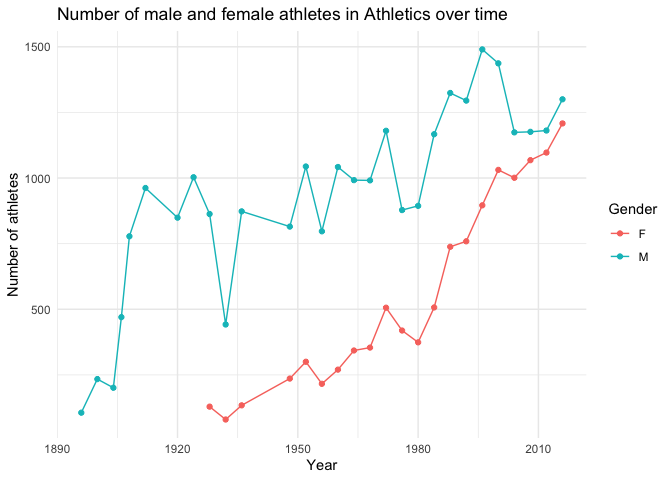

The genderOlympics package provides tools and visualisations to explore gender participation trends in the Olympic Games, spanning from 1900 to 2016 for both Summer and Winter Olympics. This package includes a comprehensive dataset, olympics_participation, with detailed information about each athlete’s participation, and an interactive Shiny app for exploring trends across years, sports, and seasons.
Installation
To install the development version of genderOlympics from GitHub, use the following command. Note that you’ll need the remotes package for this installation.
# If you don't have the remotes package installed, install it first
install.packages("remotes")
# Install the genderOlympics package from GitHub
remotes::install_github("ETC5523-2024/assignment-4-packages-and-shiny-apps-Billy0624")Once installed, load the package with:
Dataset overview
The primary dataset included in this package, olympics_participation, contains information on over 270,000 athletes, covering:
Athlete demographics: name, age, sex, height, and weight
Event details: sport, event, medal won (if any), and team
Olympic metadata: year, season (Summer or Winter), city, and National Olympic Committee (NOC) code
Example of exploring the dataset:
library(dplyr)
library(ggplot2)
# Filter for athletics sport in the Summer Olympics
athletics_data <- olympics_participation |>
filter(sport == "Athletics", season == "Summer") |>
group_by(year, sex) |>
summarise(count = n(), .groups = "drop")
# Plot the number of male and female athletes per year for athletics
ggplot(athletics_data, aes(x = year, y = count, color = sex)) +
geom_line() +
geom_point() +
labs(
title = "Number of male and female athletes in Athletics over time",
x = "Year",
y = "Number of athletes",
color = "Gender"
) +
theme_minimal()
Launching the Shiny App
The genderOlympics package includes a Shiny app for interactively exploring gender trends in the Olympics. The app allows users to:
Select the season (Summer or Winter).
Filter by a specific year range.
Choose specific sports or select all sports at once.
To launch the Shiny app, use:
run_app()This app provides two main visualizations:
Gender participation over time: Displays the number of male and female athletes over time.
Sports participation by gender: Shows the number of sports in which male and female athletes participated over time.